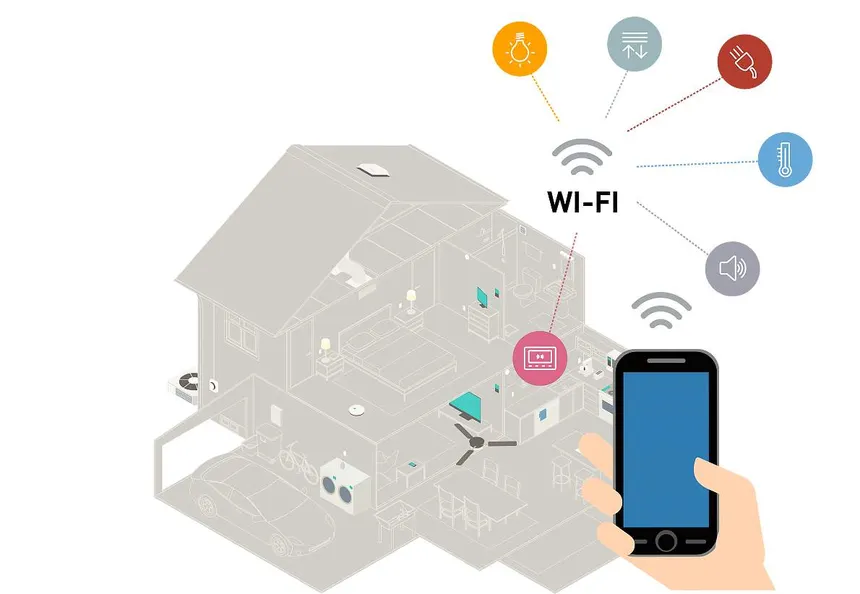

01
Hogar inteligente
Un sistema doméstico conecta luces, cerraduras y electrodomésticos a una sola red. Con el tiempo aprende rutinas: a qué hora llegas, qué temperatura prefieres, cuándo sueles apagar las luces.
Ejemplo: un enchufe inteligente corta la corriente de un cargador olvidado después de que el teléfono termina de cargar.